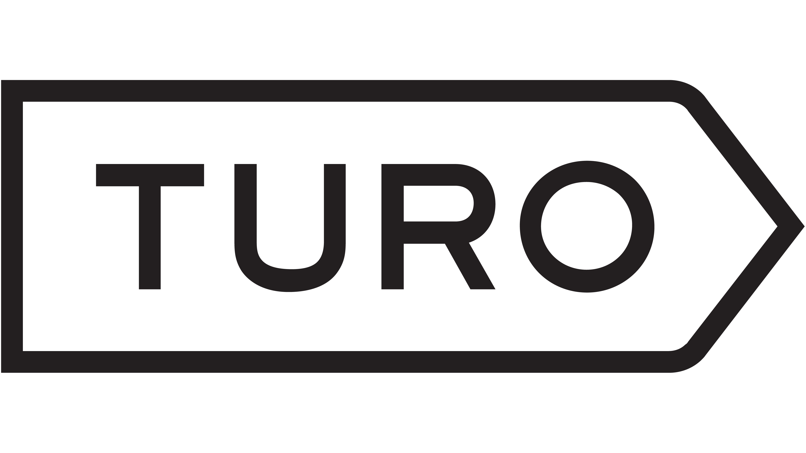
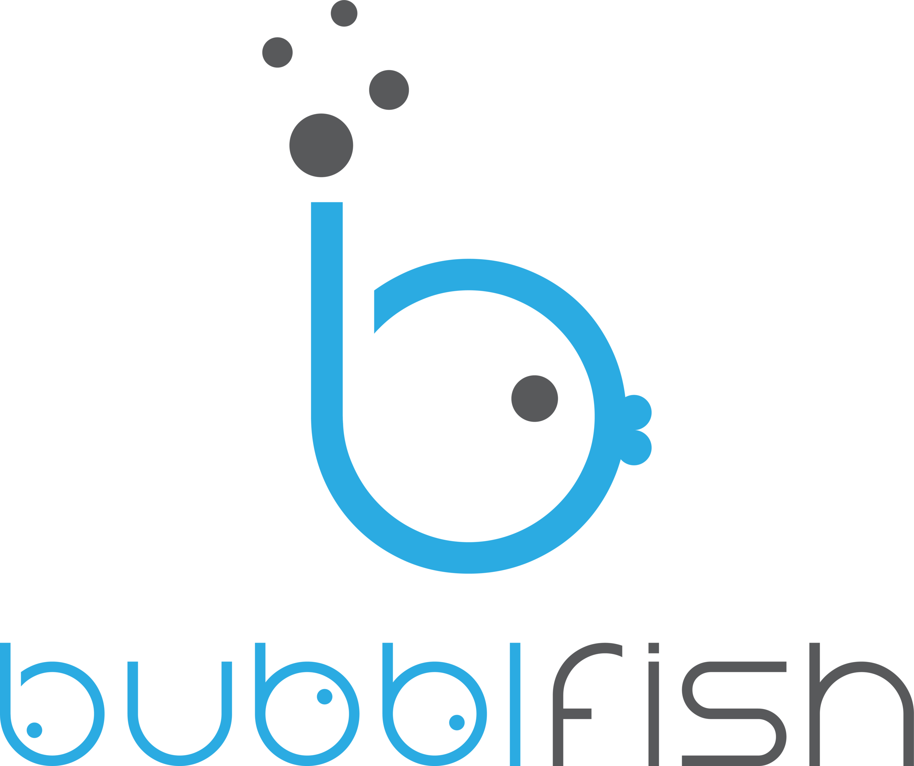

Experience

Product Manager Intern | Tesla
Los Angeles, CA | January 2024 - August 2024
- Designed and built internal software system to help improve team’s workflow and efficiency
- Supported and later led end-to-end product development of vehicle accessories for existing and future Tesla vehicle programs including Cybertruck, Robotaxi, Model Y, Model X, Model S, and Model 3
- Conducted market, consumer, and competitive research, analyzed sales data to build product requirements & associated strategy
- Created product briefs to align cross-functional teams and develop business cases to establish profitability and KPIs
- Supported cross-functional collaboration with Design, Engineering, Finance, Legal, and Web to develop and launch products
- Initiated negotiations with suppliers, resulting in a nearly 50% cost reduction across multiple product lines

Product Manager Intern | Corsair
Fremont, CA | June 2022 - September 2022
- Reported to Director of Product, creating MRD, POA, and associated product presentations for new product line
- Conducted user research, market/competitor analysis for development of new products in new market segment
- Established plan for press events, retail events, social media influencers, and company website for new products
- Developed product EOL strategy and discontinuation plan, analyzing part consumption and project long-term requirements

Product Operations Intern | Turo
San Francisco, CA | July 2021 - October 2021
- Worked with senior leadership to identify new projects for improving user experience, reducing pain points, and improving operational margins
- Wrote technical specifications for multiple automated customer-facing support tools
- Analyzed CRM data to identify and managed implementation of changes to site, technology, and procedures projected to result in approximately $1.8M+ in savings over 3 years
- Coordinated with Customer Service, Business Operations, Engineering, Product, and external technology providers to shepherd project through the implementation phases
- Identified payment issues within Turo’s website/mobile app and worked with Engineering to implement fixes
Sales & Marketing Intern | Western Digital
San Jose, CA | June 2020 - August 2020
-
Design and Implement Publication Workflow System:
- Incorporated requirements from Legal, PR, Sales, Marketing, and Executive team.
- Designed and implemented automated workflows for the corporate Publications Approval Process, significantly reducing manual effort and improving speed and quality.
- Created and delivered training for employees on using the new system.
-
WD_BLACK Marketing Campaign Development:
- Completed Inbound Marketing program and established SEO/SEM best practices within Technical Publications.
- Identified inconsistencies on the company website that negatively impacted SEO/SEM effectiveness.
-
Work Management System:
- Collaborated with IT to define, implement, and roll out workflows for a new management tracking system on behalf of the Tech Pubs team.

Co-founder | Bubblfish
Denver, CO | August 2020 - June 2022
- Worked on developing gig-based service managed by a multi-platform mobile app and online site (Paused development)
- Responsibilities: Corporate management, business processes, finance, app UX flows & front-end design, marketing